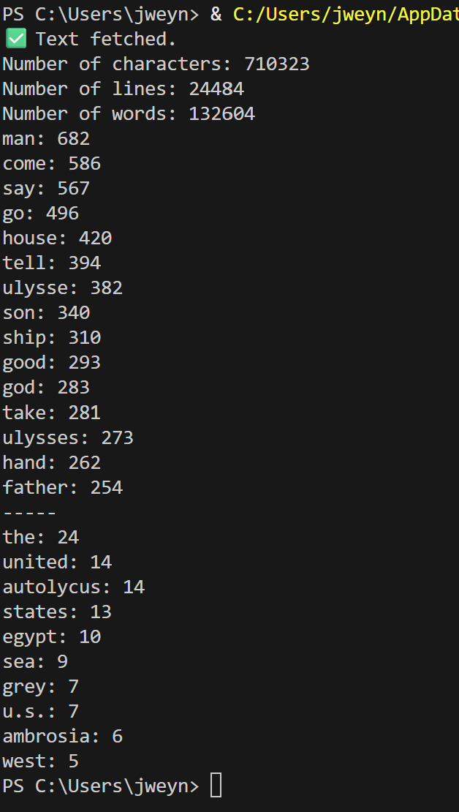

This project was done to teach us about the SpaCy program and how it differs from modern text analysis models (LLMs). However, because SpaCy is so lightweight and much easier to run, it is still useful today. Our assignment was to import a long text of our choice, and first remove all the 'stop words' and punctiation, and lemmatize the rest. Then, we had to find the top 15 most commonly used nouns, and then a second category of words of our choice. I chose to use the entire Odyssey by Homer (which may have been a mistake because of how long it took to load every test, but whatever). My secondary analysis was to get the most frequently mentioned locations, because of the plot of the Odyssey. Unfortunately, because of the translated Greek, and the limitations of the model, it didn't really work very well, but it managed to get a couple!

As you can see, the most used nouns list worked great, but it went a little funny with the locations. It got the united states in three separate entries, because the copyright and publishing details of the text mentioned them. It got a few words right and a few word not so much. Not too bad!